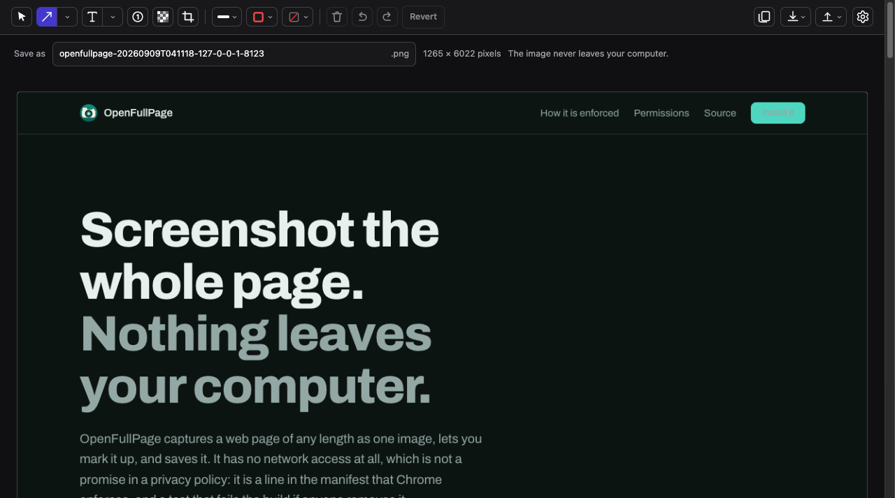
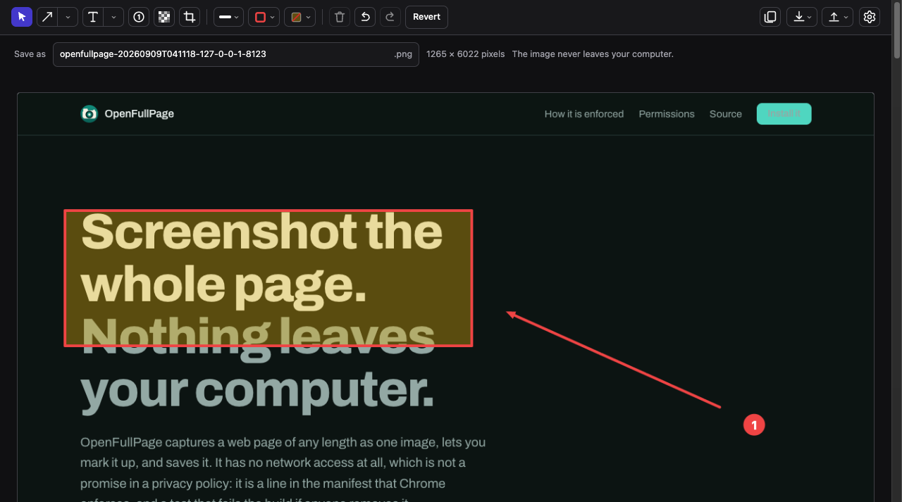
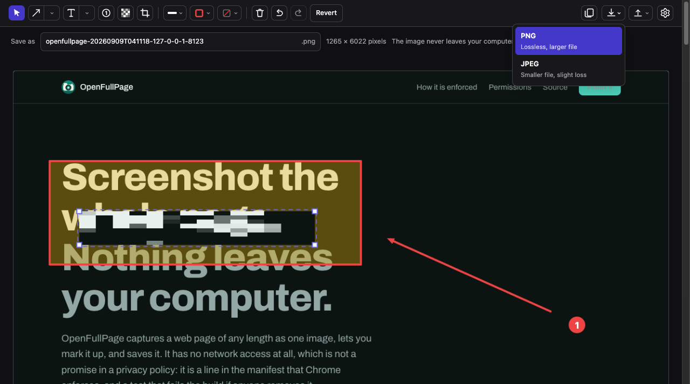

Screenshot the whole page.Nothing leaves your computer.
OpenFullPage captures a web page of any length as one image, lets you mark it up, and saves it. It has no network access at all, which is not a promise in a privacy policy: it is a line in the manifest that Chrome enforces, and a test that fails the build if anyone removes it.
| Name | Status | Type | Size |
|---|---|---|---|
| No requests. The extension has nowhere to send anything. | |||
connect-src 'none' tells Chrome to refuse every outbound request the
extension could make: fetch, XMLHttpRequest, WebSocket,
and beacons. It is not our code choosing to behave. It is the browser refusing
to carry the traffic.
Capture, mark up, save
Three steps, all of them on your machine.



Five rules, and the test that enforces each one
Every extension in this category says it respects your privacy. The difference here is that you do not have to take anyone's word for it. Each rule below is checked on every commit, and the build fails if it is broken.
No network access
No requests of any kind. No analytics, no error reporting, no remote fonts, no remote images.
No remote code
No eval, no new Function, no update server of our own, no remotely fetched configuration or blocklists.
No dependencies and no build step
The package you install is byte for byte the files in the repository. There is no bundler in between that could add something you did not read.
No broad permissions at install
It cannot read a page until you click the button on that page. Everything wider than that is optional, off by default, and revocable.
No synced storage
chrome.storage.sync would send your settings to Google's servers. Settings stay on the machine that made them.
Every permission, and what it cannot do
Three permissions are requested when you install. Two more are asked for later, at the moment they are needed, and you can say no to both and still use the extension.
| Permission | When | What it is for |
|---|---|---|
activeTab |
At install | Read the page you are on, and only after you click the toolbar button on it. It grants nothing until that click and expires when you leave. |
scripting |
At install | Run the code that scrolls the page and measures it. It can only run where activeTab has already let us in. |
storage |
At install | Remember your settings on this computer. Local storage only, never the synced kind. |
downloads |
On first save | Put the finished image in your downloads folder. Refuse it and you can still right click the image and save it yourself. |
webNavigation and site access |
Optional, off | Capture the full contents of cross-origin iframes rather than only what is on screen. Off unless you turn it on in settings, and revocable at any time. |
Worth saying plainly: even with every one of these granted, the content security policy still blocks all outbound traffic. The widest permission the extension can hold lets it read a page. None of them lets it send what it read anywhere.
Check it yourself in five minutes
This is the part that matters. You do not need to trust the list above, because you can run the same checks the build runs.
Watch it capture with DevTools open
Open the Network tab, capture a long page, and look at the request list. It stays empty. This takes about thirty seconds and needs no tools at all.
Read the manifest
The whole security posture is a handful of lines you can read in a minute.
// manifest.json "permissions": ["activeTab", "scripting", "storage"], "content_security_policy": { "extension_pages": "script-src 'self'; object-src 'none'; connect-src 'none'" }
Run the checks the build runs
No install step, because there is nothing to install.
$ node --test 'test/**/*.test.js' ℹ pass 86 ℹ fail 0
Diff the package against the source
Prove that what you install is what you read. The packaging tool rebuilds the zip and compares it, file by file, with the repository.
$ ./tools/pack.sh dist/openfullpage-1.6.1.zip (36 files) $ ./tools/verify-crx/verify-crx zip \ dist/openfullpage-1.6.1.zip . identical
Install it
The Chrome Web Store listing is being prepared. Until it is live you can run the extension straight from the source, which is the same set of files the store package will contain.
- Download or clone the repository.
- Open
chrome://extensions. - Turn on Developer mode, top right.
- Click Load unpacked and choose the folder.
- Pin OpenFullPage to the toolbar and click it on any page.
Why not the store yet? Because the listing has to describe exactly what the code does, and the code is still being finished. A store page that overstates the product would undo the only thing this project is for.
What you need
Chrome 116 or newer, on any desktop platform. Nothing else. There is no account, no sign in, no configuration and no build step.
What it costs
Nothing, now or later. There is no paid tier to upsell you to, which is also why there is no reason to collect anything about you.
Questions
How do I know the extension will not change after I install it?
You do not, and neither does anyone else, which is the honest answer. Chrome updates extensions silently, and it only re-prompts you when the permissions increase. An extension that already has the permissions it needs can change what it does with them without asking again.
What this project does about that is keep the permissions minimal enough that a change of behaviour would need a visible permission prompt, publish every release from a public repository, and make the shipped package byte identical to the source so any release can be diffed against the code that claims to produce it.
Does it work on very long pages?
Yes. It walks the page a screenful at a time and stitches the results, with sticky headers held still so they do not repeat down the image. Chrome's canvas has a hard ceiling of 16,384 pixels on a side, so pages longer than that are scaled down to fit rather than cut off, and the editor tells you when that has happened.
Can it capture pages behind a login?
Yes, in the ordinary way: you are logged in, so the page you can see is the page it captures. Nothing about that page is transmitted anywhere, which is precisely the case where that matters most.
What does the redaction tool actually do?
It resamples the region coarsely from the original image and paints the result back over it, then flattens everything on export. The exported file genuinely has no original underneath. It is not a blur layer over recoverable pixels in a layered document, which is how redactions usually leak.
Why is there no cloud upload or sharing link?
Because adding one would mean adding network access, and the network access would ship to everyone, including the people who never upload anything. The plan is to keep the extension incapable of sending data and let it hand the image to whatever service you choose through your clipboard instead.
Is it really free, and what is the catch?
It is free and the source is public under GPL-3.0. The catch, such as it is, is that it does less than the extensions that fund themselves by knowing things about you. It has no history server, no account and no sharing links, because each of those needs a network connection this deliberately does not have.